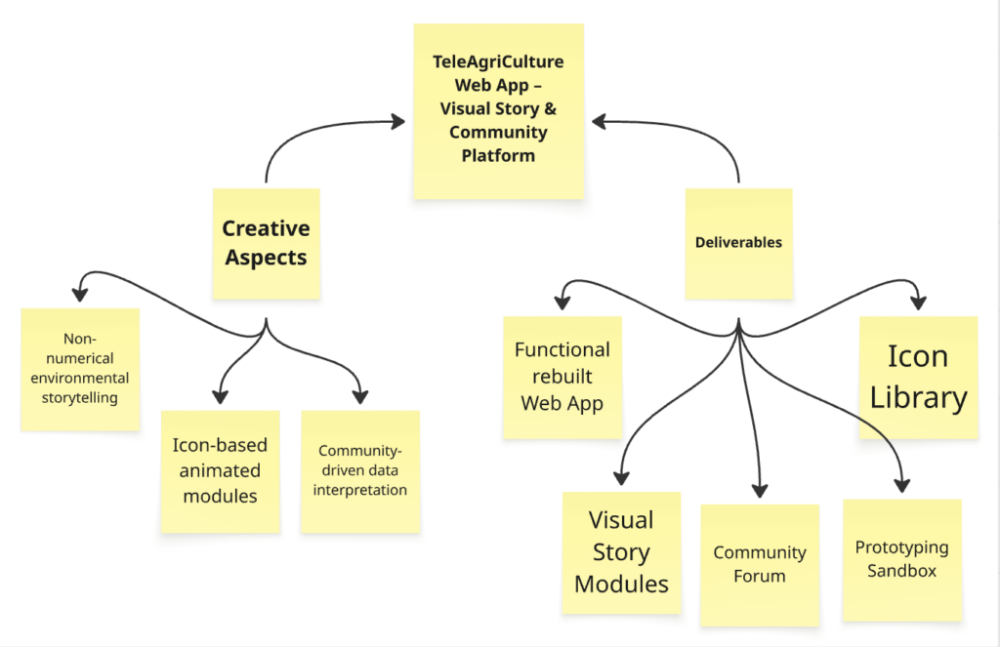
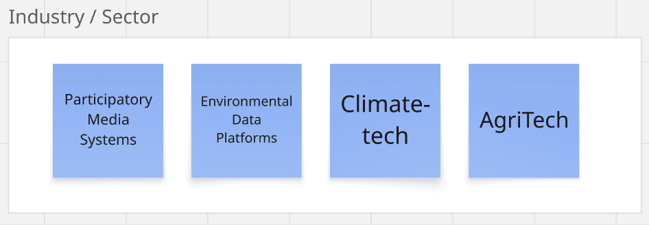
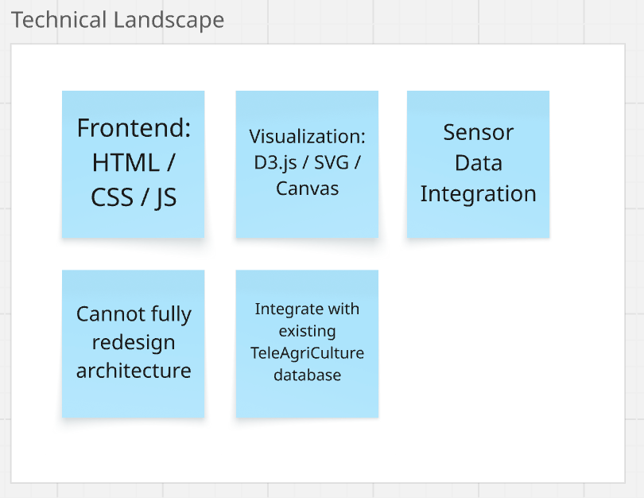
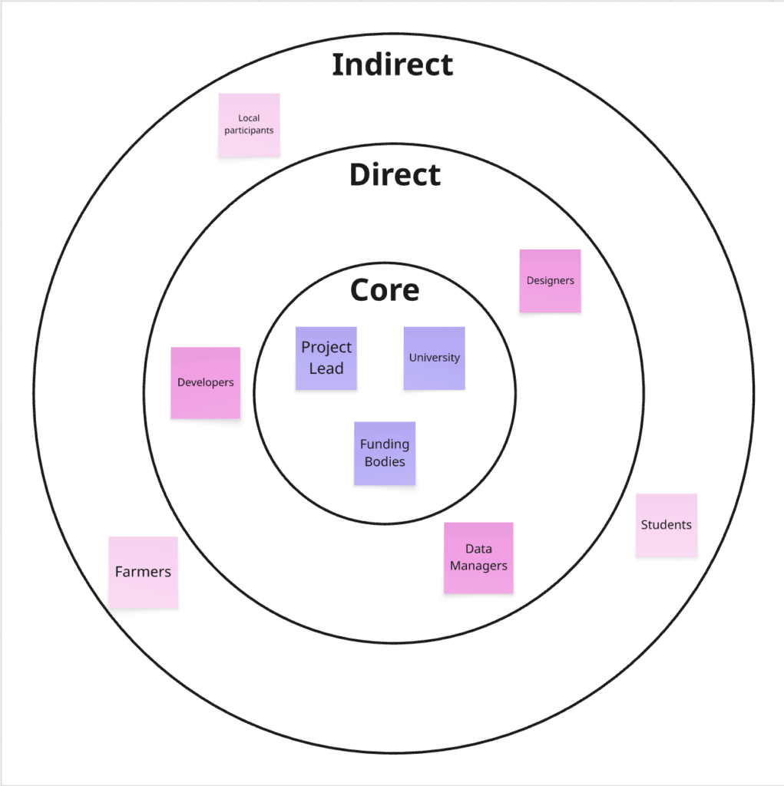
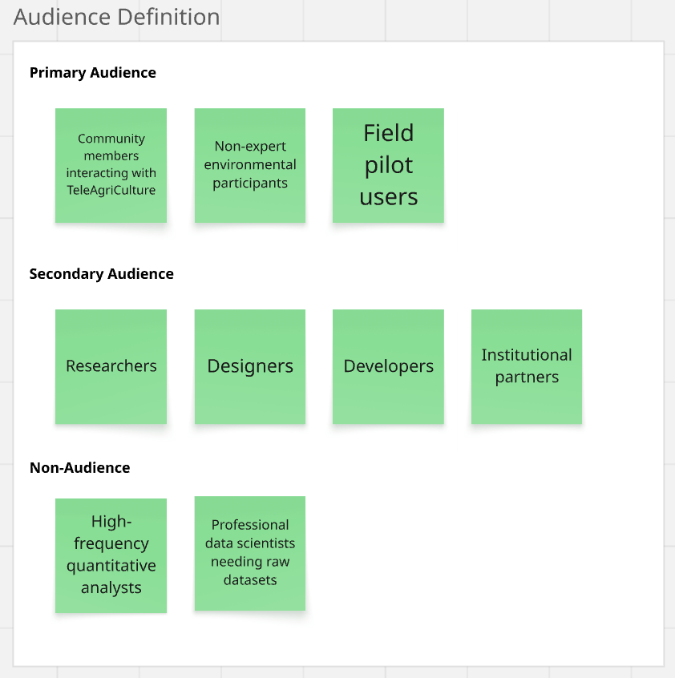
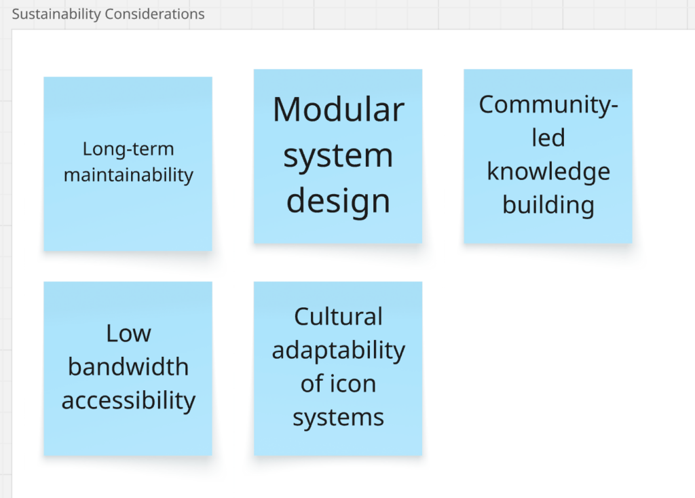
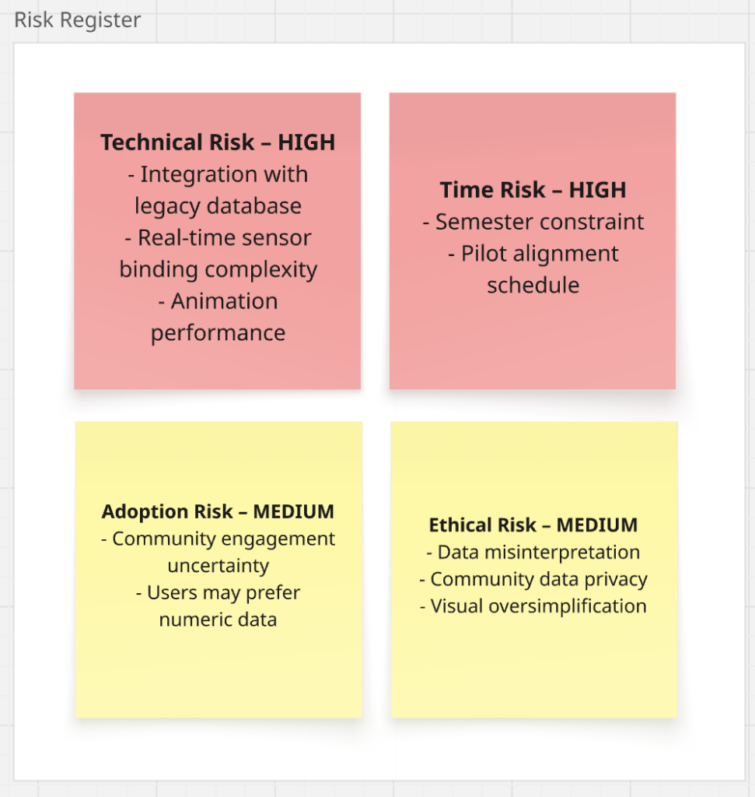
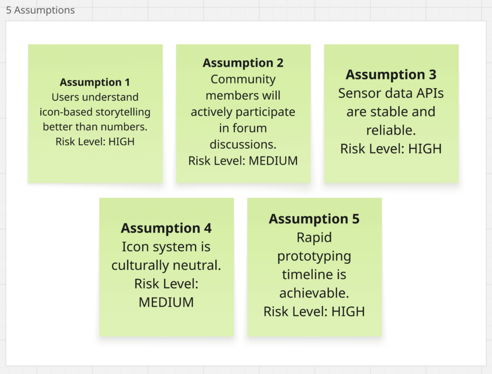
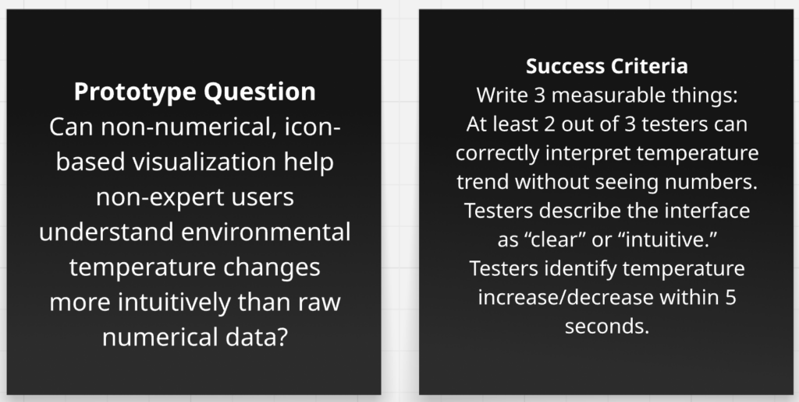

Initial Concept
TeleAgriCulture began as an exploration into how environmental and agricultural data could be translated into more accessible and emotionally engaging forms of communication. Early discussions around sustainability and remote environmental awareness highlighted a recurring issue: although large amounts of environmental data are collected through sensors and monitoring systems, much of this information remains difficult for non-specialist audiences to understand or emotionally connect with.
Rather than presenting agricultural data purely through numerical dashboards or technical graphs, the project aimed to investigate how data could become experiential, visual, and narrative-driven. This led to the development of a speculative interactive system that transforms live or simulated environmental conditions, such as soil moisture, humidity, and temperature into responsive visual storytelling modules.
In addition to improving the visualisation of environmental data, the project also began addressing usability and interface design issues commonly found in existing agricultural platforms. Early research revealed that many environmental monitoring websites contain large amounts of information that are difficult to navigate, making it challenging for users to quickly locate specific data or understand relationships between different environmental conditions.
This shifted the project beyond simple data visualisation and towards redesigning the overall experience of interacting with environmental information. As a result, the project started to explore interface layout, information hierarchy, navigation systems, and modular content organisation in order to improve accessibility and usability.
Context Map
During the early research and planning stage, a context map was developed on Miro to explore the broader ecosystem surrounding the TeleAgriCulture project. The map was used to organise the project’s creative direction, technical landscape, stakeholders, audience groups, deliverables, ethical considerations, and potential risks. This process helped establish a clearer understanding of how the platform operates within environmental communication, interactive technology, and digital community systems, while also identifying key opportunities and constraints that would influence later development stages.
Project Core Diagram

This diagram presents the core conceptual structure of the TeleAgriCulture Web App Visual Story & Community Platform. It maps the relationship between the project’s central goals, creative direction, and intended deliverables, illustrating how environmental data, interaction design, and community participation intersect within the system.
The diagram positions the project as more than a conventional agricultural monitoring platform. Instead of focusing solely on numerical analytics, the system explores how environmental information can be communicated through visual storytelling, participatory interpretation, and accessible interface design.
The project is divided into two primary areas:
Creative Aspects
This section focuses on the experiential and narrative dimensions of the platform.
Key concepts include:
- Non-numerical environmental storytelling — translating environmental conditions into visual and emotional experiences rather than purely technical statistics.
- Icon-based animated modules — using animated visual systems to improve accessibility, interaction, and engagement.
- Community-driven data interpretation — encouraging collaborative understanding and discussion of environmental information through shared interaction.
These elements collectively shift the platform away from traditional dashboard aesthetics and towards a more human-centred and participatory experience.
Deliverables
This section outlines the practical outputs and system components developed throughout the project.
The final deliverables include:
- A functionally redesigned web application
- Interactive visual storytelling modules
- Possibly a community discussion forum
- A prototyping sandbox for experimentation
- A modular icon library supporting the platform’s visual language
Together, these components form a speculative digital ecosystem that combines environmental awareness, interface redesign, and collaborative engagement within a unified platform.
Industry Sector

This diagram positions TeleAgriCulture within a multidisciplinary industry landscape, highlighting the different sectors and technological contexts that inform the project’s development. Rather than existing solely as an agricultural platform, the project operates across several overlapping fields including interactive media, environmental communication, and digital technology systems.
The project is situated within four primary sectors:
- Participatory Media Systems — emphasising user interaction, collaborative engagement, and community participation in interpreting and discussing environmental information.
- Environmental Data Platforms — focusing on the collection, processing, and visual communication of environmental conditions and sensor-based data.
- Climate-tech — positioning the project within broader technological responses to climate awareness, sustainability, and environmental adaptation.
- AgriTech — connecting the system to agricultural technology and digital approaches to monitoring, accessibility, and remote environmental interaction.
By combining these areas, TeleAgriCulture explores how agricultural and environmental information can move beyond purely technical systems and become more interactive, accessible, and socially engaging through design and digital storytelling.
Technical Landscape

This diagram outlines the technical landscape of the TeleAgriCulture platform, including the core technologies, data integration systems, and development constraints that shaped the project’s implementation strategy. The map was used to identify both the technical possibilities and practical limitations involved in redesigning the platform.
The technical structure can be divided into three main areas:
Frontend and Visualisation Technologies
The platform is built using standard web development technologies including HTML, CSS, and JavaScript, forming the foundation of the interface and interaction system.
To support more dynamic and experimental forms of environmental storytelling, the project explored the use of:
- D3.js for customised and interactive data visualisation
- SVG and Canvas rendering for animated visual systems and scalable graphical interaction
These technologies enabled the development of more expressive visual storytelling modules rather than relying on static charts or conventional dashboard layouts. The combination of SVG and Canvas also allowed the project to balance interactivity, animation, and larger-scale graphical rendering.
Data Integration
A major technical focus of the project involved integrating environmental sensor data into the platform. This included exploring methods for connecting live or simulated environmental inputs, such as humidity, temperature, and soil conditions, into the visual interface.
The system was also designed to integrate with the existing TeleAgriCulture database infrastructure rather than replacing it entirely. This ensured continuity with pre-existing data structures and allowed the redesign process to remain compatible with the broader platform ecosystem.
Development Constraints
An important limitation identified during development was the inability to fully redesign the existing system architecture. Rather than building a completely new platform from scratch, the project needed to operate within the constraints of the current framework and infrastructure.
As a result, the design process focused more heavily on:
- Interface redesign
- Modular feature integration
- Visual enhancement
- Improved usability and navigation
- Flexible overlay systems rather than full architectural replacement
These constraints significantly influenced the project’s development strategy and encouraged a more adaptive and iterative design approach.
Stakeholder Map

This stakeholder map visualises the different groups involved in or affected by the TeleAgriCulture project. Using a concentric circle structure, the diagram illustrates varying levels of influence, participation, and proximity to the platform’s development and operation.
The mapping process helped identify the relationships between decision-makers, collaborators, technical contributors, and wider community participants, while also clarifying how responsibilities and influence are distributed across the project ecosystem.
Core Layer (Decision Making and Institutional Support)
The central layer represents the primary organisational and strategic stakeholders responsible for driving the project forward.
This includes:
- Project Lead: overseeing the overall direction, coordination, and development of the project.
- University: providing academic support, research context, and institutional infrastructure.
- Funding Bodies: supporting the project through financial resources and enabling development opportunities.
These stakeholders play a key role in shaping the project’s priorities, scope, and long-term sustainability.
Direct Layer (Development and Operational Roles)
The middle layer represents stakeholders directly involved in building, maintaining, and designing the platform.
This includes:
- Developers: responsible for implementing the technical systems, frontend architecture, and data integration.
- Designers: focused on interface design, visual storytelling, user experience, and interaction systems.
- Data Managers: overseeing environmental data processing, sensor integration, and database maintenance.
These roles collectively contribute to the functional and experiential aspects of the platform.
Indirect Layer (Community Participants and End Users)
The outer layer represents wider participants, audiences, and users who interact with or benefit from the platform indirectly.
This includes:
- Local Participants: community members contributing to discussion, interpretation, or environmental engagement.
- Farmers: key users connected to environmental data collection and agricultural application.
- Students :learners, researchers, and potential future contributors to the platform ecosystem.
Including these groups within the stakeholder map reinforced the importance of accessibility, participation, and community engagement throughout the design process. Rather than functioning solely as a technical monitoring system, TeleAgriCulture aims to support broader public interaction with environmental information and collaborative interpretation.
Audience Definition

This diagram defines the target audiences of the TeleAgriCulture platform, structured into three priority levels. This classification was essential in shaping key design decisions, particularly the shift away from purely data-driven reporting towards visual storytelling and more accessible interaction design.
The audience definition directly influenced the project’s interface strategy, interaction model, and choice of visual language, ensuring that the system is aligned with real user needs rather than purely technical or analytical expectations.
Primary Audience (Non-experts and Field Users)
The primary audience represents the core users for whom the platform is designed. This group defines the fundamental direction of the user experience.
It includes:
- Community members interacting with the system in participatory contexts
- Non-expert environmental participants with limited technical or data literacy
- Field pilot users who engage with the platform in real agricultural or environmental settings
This group highlights the importance of accessibility and clarity in the interface design. As a result, the system prioritises:
- Icon-based interaction systems
- Visual storytelling modules
- Simplified navigation structures
- Reduced cognitive load in data interpretation
The needs of this audience justify the project’s emphasis on non-numerical environmental storytelling rather than traditional analytical dashboards.
Secondary Audience (Supporters and Professionals)
The secondary audience consists of stakeholders who support, develop, or enable the platform’s implementation.
This includes:
- Researchers, designers, and developers involved in system development and refinement
- Institutional partners such as universities and funding bodies
- Technical collaborators contributing to data systems and interface construction
Although not the primary end-users, this group plays a key role in ensuring the system is technically feasible, sustainable, and aligned with broader research or institutional goals.
Non-Audience (Specialist Data Analysts)
The non-audience category deliberately excludes users who require high-frequency quantitative analysis or highly technical raw data outputs, such as professional data scientists or advanced environmental analysts.
This is an important strategic decision that defines the scope of the project. By excluding this group as a primary target, the platform intentionally avoids becoming a purely analytical or scientific database system.
Instead, it reinforces the project’s focus on:
- Accessibility over technical complexity
- Interpretation over raw data exposure
- Emotional and visual understanding of environmental conditions
- Public engagement rather than expert-level analysis
This boundary clarifies why TeleAgriCulture prioritises visual storytelling and interactive design over traditional data reporting structures, ensuring the system remains approachable and meaningful for non-specialist users.
Sustainability Considerations

This diagram outlines the sustainability considerations informing the development of the TeleAgriCulture platform. Rather than focusing only on environmental themes, the project approaches sustainability through technical, social, and cultural perspectives, considering how the system can remain maintainable, accessible, and meaningful over time.
The sustainability framework helped guide decisions related to system architecture, community participation, accessibility, and long-term adaptability.
System Sustainability
A major consideration during development was ensuring the platform could remain functional and maintainable beyond the initial project phase.
Long-term Maintainability
Due to the constraint of working within an existing system architecture, the project needed to prioritise maintainable and adaptable development strategies. This included designing structures that future developers or collaborators could continue working with even after changes in team composition or project ownership.
The emphasis on maintainability also reinforced the importance of clear interface systems, organised visual structures, and scalable development practices.
Modular System Design
To support long-term sustainability, the platform was approached as a modular system composed of separate but connected components, including:
- Visual storytelling modules
- Community interaction spaces
- Prototyping environments
- Interface and icon systems
This modular structure allows individual sections of the platform to be updated, redesigned, or expanded without requiring a complete reconstruction of the entire system. It also reduces maintenance complexity and supports more flexible future development.
Social and Knowledge Sustainability
Beyond technical functionality, the project also considers how environmental knowledge can be collectively generated and shared through community interaction.
Community-led Knowledge Building
Rather than functioning only as a one-way information platform, TeleAgriCulture aims to support collaborative interpretation and discussion of environmental conditions. Users are encouraged not only to consume information, but also to participate in conversations, observations, and shared understanding of environmental change.
This transforms the platform from a purely technical monitoring tool into a more participatory knowledge ecosystem, where community interaction contributes to the ongoing meaning and value of the data itself.
Accessibility and Environmental Adaptation
The project also considered the practical realities of environmental and agricultural contexts, particularly in relation to infrastructure and cultural accessibility.
Low-bandwidth Accessibility
Many agricultural or rural environments may have limited or unstable internet connectivity. As a result, the project explored ways to ensure the platform could remain functional under lower bandwidth conditions.
This influenced decisions such as:
- Reducing dependency on heavy media files
- Prioritising lightweight visual systems
- Using scalable SVG-based graphics
- Simplifying interface loading structures
These considerations aimed to improve accessibility for users operating in remote or infrastructure-limited environments.
Cultural Adaptability of Icon Systems
Because the platform relies heavily on visual storytelling and icon-based communication, the project also considered how symbols and visual language may be interpreted differently across cultural contexts.
Certain environmental icons, colours, or visual metaphors may carry different meanings depending on regional or cultural backgrounds. Therefore, the project explored the importance of creating icon systems that are:
- Broadly understandable
- Adaptable across contexts
- Flexible for localisation or modification
This consideration supports the potential scalability of the platform across different communities and geographic regions while maintaining accessibility and clarity.
Risk Register

This risk register identifies the primary challenges and uncertainties associated with the development of the TeleAgriCulture platform. The process of mapping potential risks was important in understanding the practical limitations of the project and in shaping a more realistic and achievable development strategy.
The risks were categorised according to their level of severity and potential impact on the project, including technical, adoption, ethical, and time-related concerns.
High Risks
Technical Risk
One of the most significant challenges identified during development was the complexity of integrating new interaction systems into an existing technical infrastructure.
Legacy Database Integration
Because the project operates within an existing TeleAgriCulture system, the platform could not be fully rebuilt from scratch. Integrating redesigned interfaces and visual storytelling modules into older database structures created technical limitations and compatibility challenges throughout development.
Real-time Sensor Integration Complexity
The project also explored the possibility of integrating live environmental sensor data into the web platform. Managing real-time IoT data streams while maintaining stable interaction and responsive visual feedback introduced additional complexity, particularly within browser-based environments.
Animation and Rendering Performance
The use of dynamic visualisation systems such as D3.js, SVG, and animated interface components raised concerns about performance optimisation. More complex animations could reduce responsiveness on lower-powered devices or unstable internet connections, particularly within rural or agricultural contexts where users may not have access to high-performance hardware.
Time Risk
Time constraints represented another major development challenge.
Semester-based Development Constraints
As the project was developed within an academic timeframe, the available period for research, prototyping, testing, and refinement was limited. This created pressure to prioritise achievable outcomes rather than attempting to fully realise all speculative features.
Alignment with Field Testing and Pilot Opportunities
Agricultural systems often operate according to seasonal cycles and external environmental conditions. Coordinating testing opportunities, user engagement, or pilot implementations within limited academic schedules introduced uncertainty into the project timeline.
Medium Risks
Adoption Risk
A key uncertainty surrounding the project involved whether users would meaningfully engage with alternative forms of environmental communication.
Uncertainty of Community Participation
Although the platform emphasises participatory interaction and collaborative interpretation, there is no guarantee that users or local communities would actively contribute to discussions or ongoing engagement.
This risk highlights the challenge of building not only a functional system, but also a sustainable participatory culture around environmental information.
Preference for Numerical Data
The project’s emphasis on non-numerical visual storytelling challenges conventional expectations surrounding environmental monitoring systems. Some users may prefer precise statistical information and perceive visual or narrative-driven representations as less reliable or less professional.
This directly tests one of the project’s core assumptions: that environmental information can become more accessible and engaging when communicated through alternative visual systems.
Ethical Risk
The project also identified ethical concerns related to interpretation, accessibility, and representation.
Data Misinterpretation
While visual storytelling can improve accessibility, simplified representations of environmental conditions may also increase the risk of misunderstanding or oversimplification. Users could potentially draw inaccurate conclusions or make inappropriate environmental decisions based on incomplete visual interpretations.
Privacy and Oversimplification
The platform raises additional questions regarding the boundaries of shared community data and the balance between clarity and accuracy. Simplifying complex environmental information for visual communication may unintentionally remove important contextual details, while community-based participation also introduces considerations around data ownership and privacy.
Overall, the risk register helped frame the project as an iterative and adaptive design process rather than a fully resolved technological solution. By identifying these risks early, the project was able to prioritise accessibility, flexibility, and realistic implementation strategies throughout development.
Core Assumptions and Risk Audit

This diagram identifies five core assumptions underlying the TeleAgriCulture project and evaluates the level of risk associated with each assumption failing. Mapping these assumptions was an important part of the planning and development process, as many aspects of the platform rely on speculative interaction models, experimental communication methods, and uncertain technical conditions.
The assumptions directly relate to the project’s creative direction, technical infrastructure, audience engagement strategy, and development timeline. By identifying them early, the project was able to critically reflect on which areas required further testing, iteration, and validation.
High-Risk Assumptions
Assumption 1 — Users Understand Icon-based Storytelling More Easily Than Numerical Data
One of the project’s central assumptions is that users will find icon-based visual storytelling more accessible and engaging than traditional numerical environmental reporting.
This assumption directly supports the project’s core creative direction and interaction philosophy. The platform intentionally prioritises visual interpretation, animated storytelling, and symbolic interaction rather than highly technical dashboards or raw statistical outputs.
However, this also introduces significant uncertainty. If users particularly farmers or individuals already familiar with quantitative monitoring systems continue to trust numerical data more than visual interpretation, the project’s core communication model may become less effective or require major redesign.
This assumption is closely connected to:
- Creative direction
- Adoption risk
- Audience accessibility
- Interface strategy
Because this idea forms the foundation of the platform’s user experience, it was categorised as a high-risk assumption.
Assumption 3 — Sensor Data APIs Are Stable and Reliable
Another major assumption is that the environmental sensor infrastructure and API systems providing data to the platform will remain stable, functional, and compatible with the redesigned interface.
The project relies heavily on environmental sensor integration to support visual storytelling and real-time interaction systems. If data streams become unreliable, disconnected, inconsistent, or technically incompatible with frontend visualisation tools, the functionality of the platform would be significantly affected.
This assumption directly relates to:
- Technical infrastructure
- Real-time data integration
- IoT sensor systems
- Frontend visualisation performance
Even highly refined visual systems would lose effectiveness if the underlying environmental data becomes unstable. As a result, this assumption was also identified as high risk.
Assumption 5 — Rapid Prototype Development Within the Academic Timeline Is Achievable
The project also assumes that its core features and prototypes can be developed within a limited academic timeframe.
TeleAgriCulture combines multiple complex components, including:
- Legacy database integration
- Interactive interface redesign
- Visual storytelling systems
- Community participation features
- Experimental sandbox environments
- Sensor data integration
Balancing these ambitions within a semester-based schedule introduced considerable development pressure. If the available time proved insufficient, key systems might remain incomplete, under-tested, or overly simplified.
This assumption relates directly to:
- Time risk
- Semester constraints
- Development feasibility
- Prototype scope management
Because the project timeline strongly influences the viability of the final outcome, this assumption was categorised as high risk.
Medium-Risk Assumptions
Assumption 2 — Community Members Will Actively Participate in Forum Discussions
The platform assumes that users and community members will actively contribute to discussion spaces, collaborative interpretation, and shared environmental knowledge-building.
This assumption supports the project’s vision of creating a participatory environmental platform rather than a passive information system. However, community-based platforms often face “cold-start” challenges, where users may not immediately engage with or contribute to the system.
Simply providing a forum or interaction space does not guarantee meaningful participation or sustained activity.
This assumption connects closely to:
- Community forum development
- Participatory interaction
- Adoption risk
- Knowledge-sharing systems
Because community engagement can develop gradually over time, this assumption was categorised as medium risk.
Assumption 4 — The Icon System Is Culturally Neutral and Universally Understandable
The project also assumes that its icon-based visual language can communicate environmental information clearly across different cultural and regional contexts.
Since TeleAgriCulture relies heavily on symbolic interaction and visual storytelling, the interpretation of icons, colours, and environmental metaphors becomes highly important. However, visual symbols may carry different meanings depending on cultural background, local practices, or regional associations.
If certain icons are misunderstood or interpreted inconsistently, the accessibility and clarity of the system could be reduced.
This assumption relates directly to:
- Cultural accessibility
- Sustainability considerations
- Interface communication
- Cross-cultural usability
Because the issue primarily affects scalability and broader adoption rather than core system functionality, it was classified as a medium-risk assumption.
Overall, the assumption mapping process reinforced the importance of testing, iteration, and adaptability throughout the project. Rather than treating the platform as a fully resolved product, the project acknowledges uncertainty as a central part of speculative and experimental design practice.
Prototyping and Testing Framework

This final set of prototype testing cards marks the transition of the project from broader strategic planning into practical and measurable user testing. At this stage, the project began translating earlier conceptual assumptions into focused interaction experiments that could be evaluated through direct observation and measurable outcomes.
The testing framework specifically targeted one of the project’s highest-risk assumptions: whether icon-based visual storytelling could communicate environmental information more effectively than raw numerical data for non-expert users.
Rather than relying on vague or purely subjective feedback, the project established a set of structured success criteria designed to evaluate usability, clarity, and interaction efficiency.
Prototype Question
The prototype focused on the following core research question:
Can non-numerical, icon-based visualisation help non-expert users understand environmental temperature changes more intuitively than raw numerical data?
This question directly reflects the project’s broader goal of reducing technical barriers in environmental communication and exploring alternative approaches to data interpretation.
The prototype investigated whether visual storytelling systems could improve:
- Accessibility
- Speed of understanding
- Emotional engagement
- Environmental awareness
for users without specialist agricultural or scientific knowledge.
Success Criteria
To evaluate the effectiveness of the prototype, the project established three measurable success criteria inspired by user experience testing methodologies and SMART evaluation principles.
Criterion 1 — Accurate Interpretation of Environmental Trends
At least two-thirds of participants should be able to correctly identify whether the environmental temperature trend was increasing or decreasing without being shown numerical values.
This criterion tested whether the visual storytelling system successfully communicated environmental information without relying on technical data displays.
The goal was to ensure that visual simplification did not reduce the accuracy or clarity of the information being presented.
Criterion 2 — Positive User Perception and Cognitive Accessibility
Participants should describe the interface using terms such as:
- “Clear”
- “Easy to understand”
- “Intuitive”
This criterion focused on the subjective user experience and evaluated whether the interface reduced cognitive load for non-expert audiences.
The project aimed to measure not only functional understanding, but also how approachable and accessible the system felt during interaction.
Criterion 3 — Fast Recognition and Interaction Efficiency
Participants should be able to identify whether the temperature was rising or falling within five seconds.
This criterion tested the efficiency of the icon system and simulated real-world environmental interaction scenarios where users may need to quickly interpret changing conditions.
The five-second threshold also helped evaluate whether the visual system remained readable and effective under simplified or low-bandwidth conditions, particularly within agricultural contexts where rapid interpretation may be important.
Overall, this prototyping and testing phase transformed the project’s conceptual assumptions into measurable interaction challenges. By establishing concrete evaluation criteria, the project shifted from speculative design thinking towards evidence-based iteration and user-centred refinement.
Context Map Reflection
The context mapping process helped define the wider ecosystem surrounding the TeleAgriCulture project, including its creative direction, technical landscape, stakeholders, audiences, sustainability considerations, and potential risks.
By organising these elements within the Miro board, the project developed from an initial concept into a more structured and research-informed design proposal. The process also helped identify key assumptions, constraints, and opportunities that informed later design and prototyping decisions.
Overall, the context map reinforced the project’s aim of making environmental information more accessible, interactive, and engaging through visual storytelling and user-centred interface design.
The full context mapping process and supporting diagrams can be viewed through the Miro board below:
https://miro.com/app/board/uXjVG8P5o5Y=/?share_link_id=820149390316